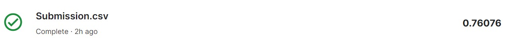

In this blog post, by using machine learning, we can approach this question in a systematic and data-driven manner. We will try predicting survival on the Titanic using a logistic regression model.
The Titanic dataset is available on Kaggle. It's divided into two parts: train.csv and test.csv. The training dataset includes details about passengers and whether they survived or not. The test dataset contains similar information but without the 'Survived' column - this is what we'll predict. A quick look at the data using train.info() and train.head() reveals columns like PassengerId, Pclass, Name, Sex, Age, SibSp, Parch, Ticket, Fare, Cabin, and Embarked.
Machine learning models require clean data. For the Titanic dataset, we:
With clean data in hand, we split it into training and testing sets and train a logistic regression model. This model will learn from the training data and then predict if a passenger survived or not based on their features.
from sklearn.linear_model import LogisticRegression
logmodel = LogisticRegression()
logmodel.fit(X_train, y_train)
After training the model, we evaluate its performance on the test data. We use metrics like:
To improve the performance of this model, I have done more data preprocessing by cleaning and processing data by removing the errors, inconsistencies, and outliers which was negatively impacting the result of my analyses and predictions. By doing this, I was able to improve the accuracy of the model. Below is the new submission after doing extra data preprocessing.
